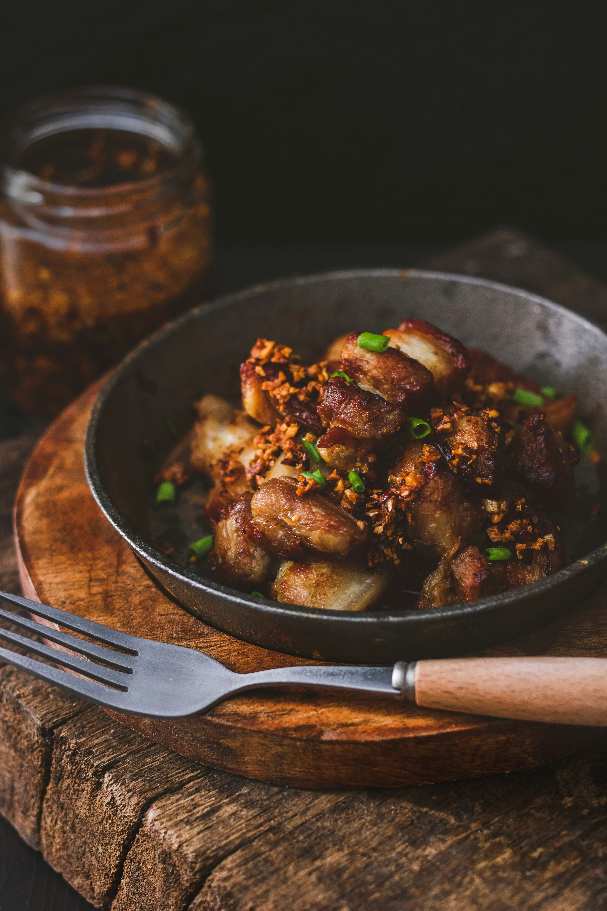

This chicken adobo recipe is simple to make and loved by all who try it! It has been modified to be a bit saucier than traditional adobo and is delicious served over rice.
Heat vegetable oil in a large skillet over medium-high heat.Cook chicken pieces until golden brown, 2 to 3 minutes per side. Transfer chicken to a plate and set aside.
Add onion and garlic to the skillet; cook until softened and brown, about 3 to 5 minutes.
Pour in soy sauce and vinegar and season with garlic powder, black pepper, and bay leaf.
Return chicken to pan, increase heat to high, and bring to a boil. Reduce heat to medium-low, cover, and simmer until chicken is tender and cooked through, 35 to 40 minutes.